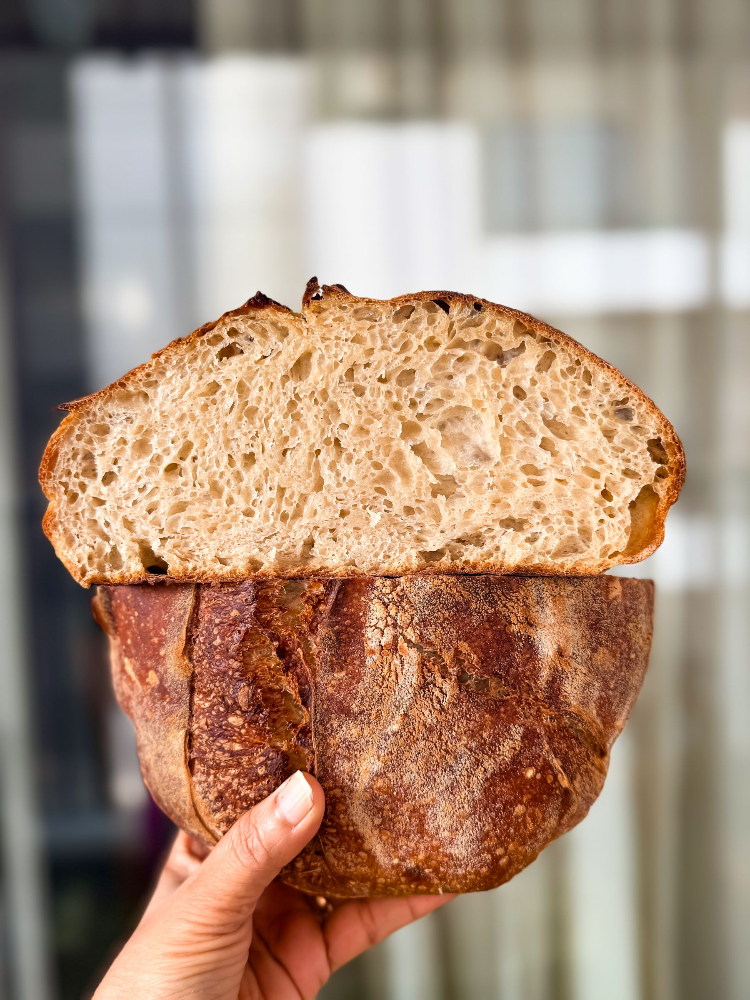
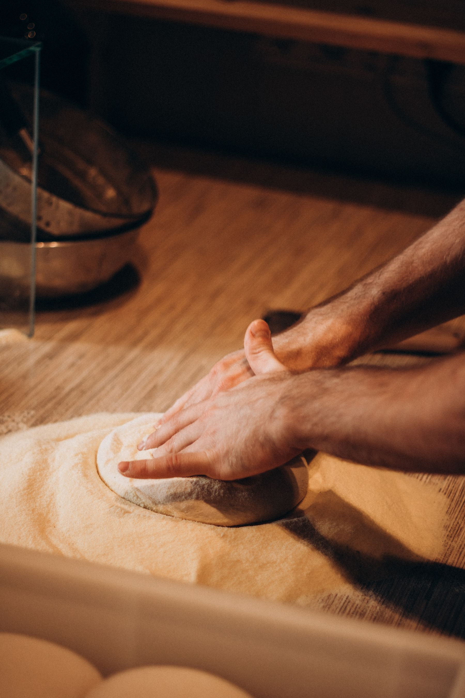
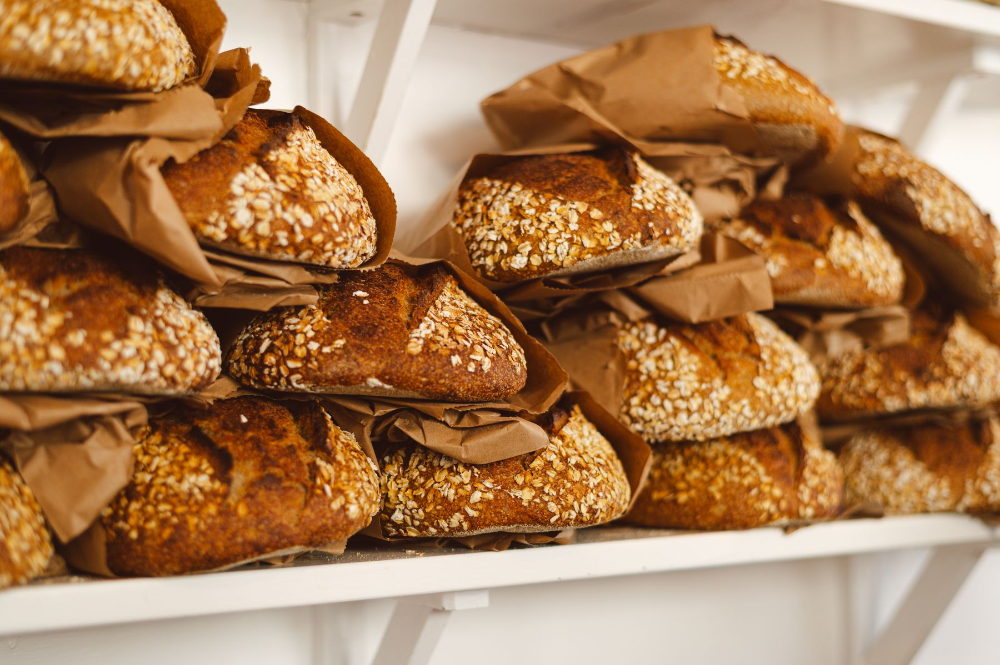

Пшеничный
на закваске
650 г · 420 ₽
К 08:00 на Хлебном, 14: пшеничный на закваске, ржаной с солодом и фокачча. Остальную выпечку смотрите в витрине ниже.
Вся витрина ↘
650 г · 420 ₽
700 г · 490 ₽
500 г · 560 ₽

НАША ПЕКАРНЯ
Тесто живёт сутки и больше. Закваску кормим каждый день, муку выбираем по вкусу, а не по этикетке. Поэтому утром на полке — хлеб, который пахнет домом.
ВИТРИНА / СЕГОДНЯ
Добавьте выпечку в набор. Количество можно изменить в подписке.

Каждый день печём небольшими партиями.ПОДПИСКА
Выберите любимое, день выдачи и срок. Календарь составится сам. Набор сохраняется в браузере и доступен для печати.